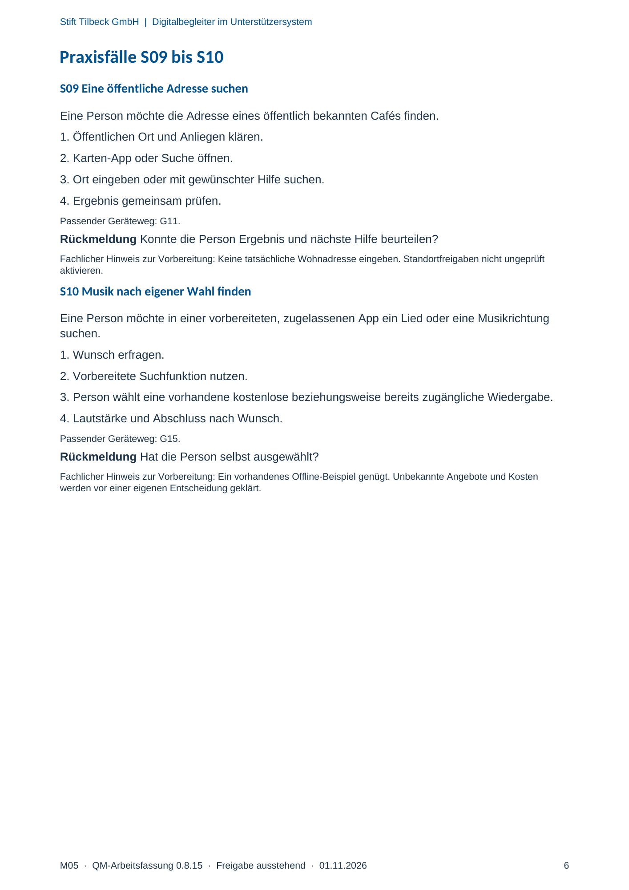

M05 · Originalseite 6
Musik nach eigener Wahl finden
Original-Druckseite mit S10. Auf derselben Seite stehen außerdem S09. Diese sind dadurch keine zusätzliche Aufgabe.
Fragen und Ankreuzfelder werden auf dem Ausdruck bearbeitet. Die Lesefassung speichert keine Antworten.
Lesefassung · Seite 6
Stift Tilbeck GmbH | Digitalbegleiter im Unterstützersystem
Praxisfälle S09 bis S10
S09 Eine öffentliche Adresse suchen
Eine Person möchte die Adresse eines öffentlich bekannten Cafés finden.
1. Öffentlichen Ort und Anliegen klären.
2. Karten-App oder Suche öffnen.
3. Ort eingeben oder mit gewünschter Hilfe suchen.
4. Ergebnis gemeinsam prüfen.
Passender Geräteweg: G11.
Rückmeldung Konnte die Person Ergebnis und nächste Hilfe beurteilen?
Fachlicher Hinweis zur Vorbereitung: Keine tatsächliche Wohnadresse eingeben. Standortfreigaben nicht ungeprüft
aktivieren.
S10 Musik nach eigener Wahl finden
Eine Person möchte in einer vorbereiteten, zugelassenen App ein Lied oder eine Musikrichtung
suchen.
1. Wunsch erfragen.
2. Vorbereitete Suchfunktion nutzen.
3. Person wählt eine vorhandene kostenlose beziehungsweise bereits zugängliche Wiedergabe.
4. Lautstärke und Abschluss nach Wunsch.
Passender Geräteweg: G15.
Rückmeldung Hat die Person selbst ausgewählt?
Fachlicher Hinweis zur Vorbereitung: Ein vorhandenes Offline-Beispiel genügt. Unbekannte Angebote und Kosten
werden vor einer eigenen Entscheidung geklärt.
Originalseite ansehen
